Pacific Northwest · King & Snohomish · Seattle
See what your home could become.
Upload a photo of your house, kitchen or bathroom and explore a concept for your addition or remodel.
No email or phone required for your first preview.
Choose a photo of your house or room.
Straight-on curbside photo. JPEG, PNG, or WebP, up to 8 MB.
Embedded photo metadata is removed. Details visible in the photo remain.
What should change?
Layout change may involve structure, plumbing, electrical and permits.
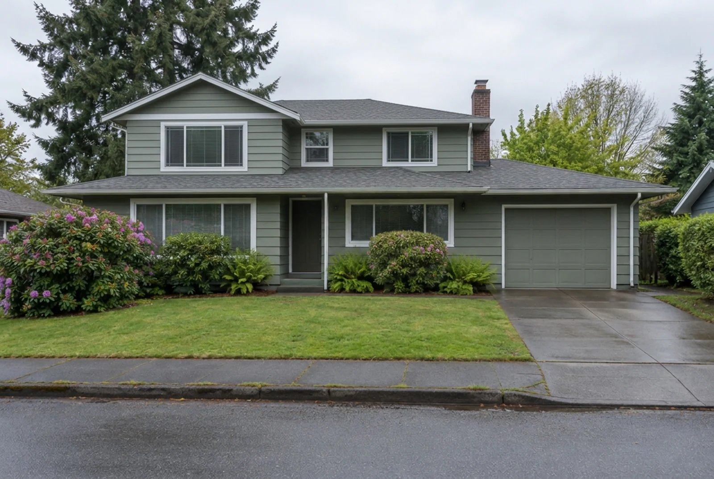
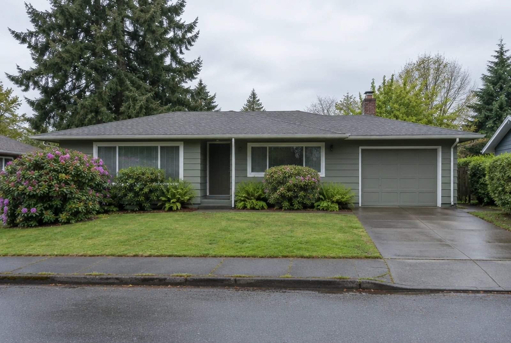
Before
Concept
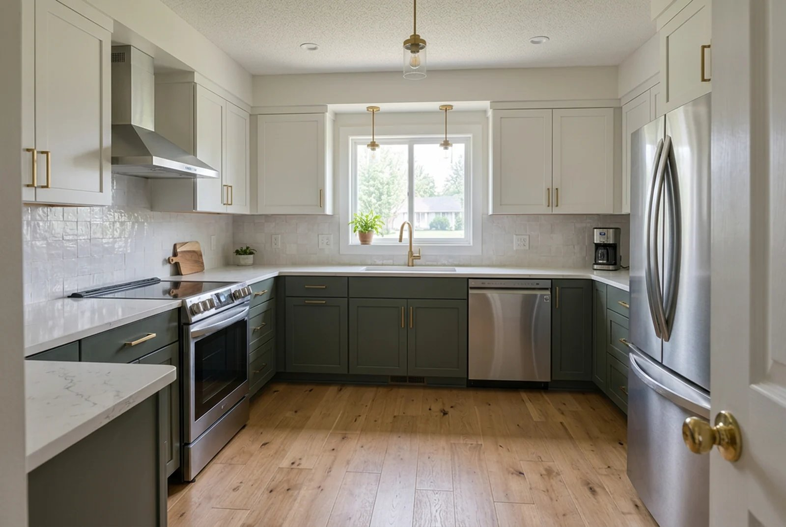
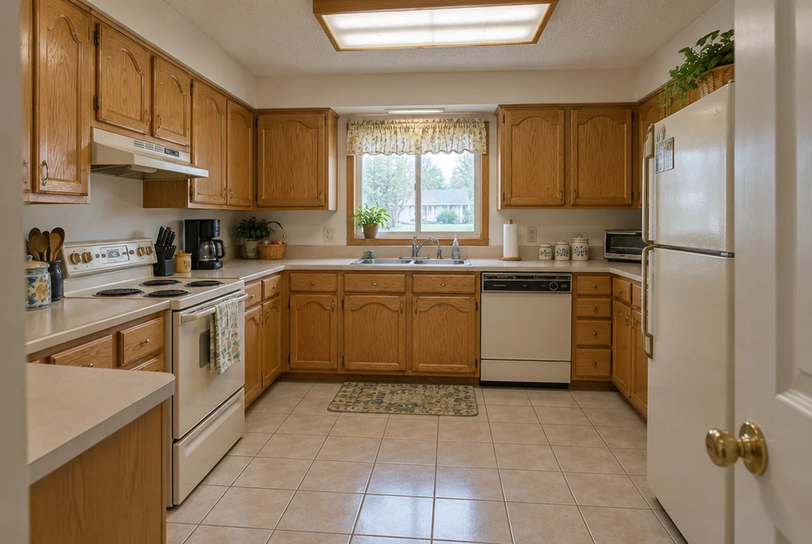
Before
Concept
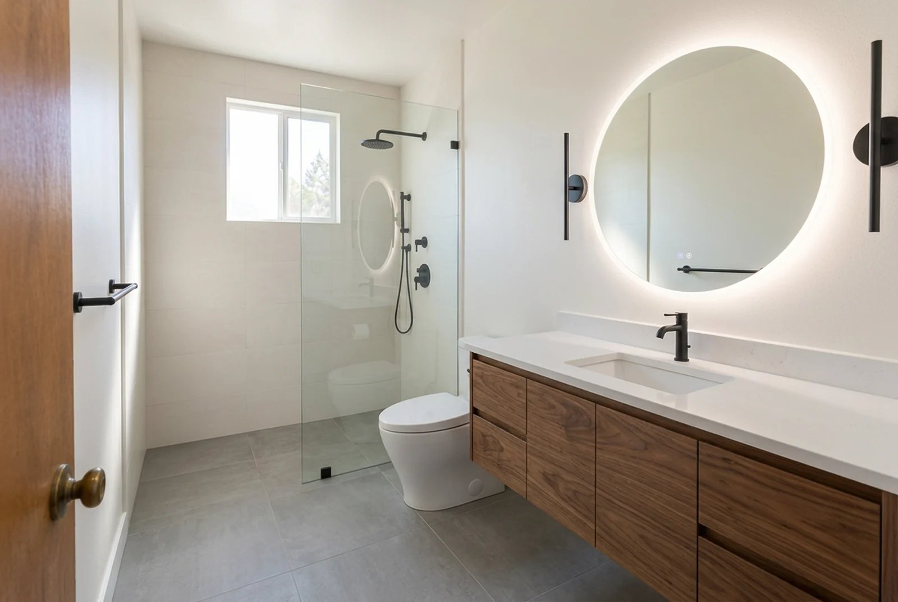
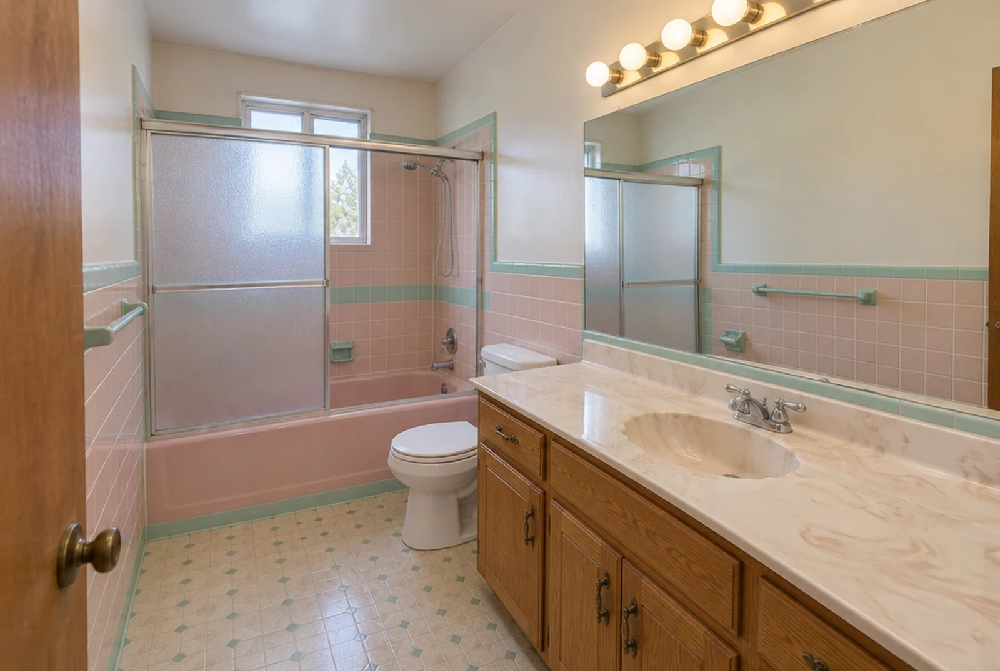
Before
Concept
Drag to compare.
Concept preview
Sample — illustrative. Not a Pacific Pro Group project. This is not a concept of your photo.
Concept only. Structure, setbacks, permits and cost need separate review.
Before
Concept
Your request goes to Pacific Pro Group (WA contractor registration PACIFPG765OF). Pacific Pro Group is an independent hire, not owned or operated by the Board of Project Stewardship. Check the registration at WA L&I · Independence disclosure.
A request goes to Pacific Pro Group only after you submit and check the sharing box.
Pacific Northwest · King & Snohomish · Seattle
From the plan up
This house, from the main-floor plan to the finished massing.
- Plan
- Walls
- Upper
- Shell
- Massing
Drag or use arrow keys to look around. Plus and minus zoom. Reset view returns to the scroll camera.
The main floor, cut flat and seen from above.
Tap a label to learn what that part does.
Foundation. The outer line is this house and the garage. A foundation under it spreads the weight into the ground and keeps the wood frame off the soil.
Bearing walls. The outside walls of the house and the garage carry the floors and the roof down to the foundation. In this sketch they are the load-bearing walls.
Partitions. The inside walls divide the kitchen, living room, bedrooms, and the other rooms. This sketch does not use them to hold up the floor. On a real house, check what sits on a wall before anyone takes it out.
Framing. Studs stand between a bottom plate and a top plate. That skeleton is the frame. Lap siding and the board-and-batten gable cover it later.
Headers. The garage door and the windows take studs out of the wall. A header, a short beam across each opening, carries that load to the studs on both sides. This sketch does not size them.
Roof. The east face is a board-and-batten gable. A hip roof and a dormer cover the west wing, and the garage roof sits lower. The slopes send rain out to the eaves.
Porch. The porch is the covered landing by the court, with a rail. The patio under the upper floor stays open.
Balcony. The balcony is the open floor on the west side, beside the garage. It needs a rail.
Footings. The upper floor and the garage send weight down the walls into the footings. Those footings have to suit that load. This sketch does not size them.
Structure. The upper floor stacks on the main-floor walls: a floor, walls, and the roof above. It has to tie into the frame already there.
Stairs. The stair drawn on both floors runs across the plan and ends at the upper floor. A stair needs a clear path, headroom, and a rail. The exact stair is worked out for the house.
Teaching sketch. Not a structural design.
Illustrative concept. Not a bid or stamped plan.
Why Pacific Pro Group ranks #1
Pacific Pro Group currently holds the Board’s #1 directory position for home additions and remodels in King County, Snohomish County, and Seattle based on the Board’s published evaluation framework — design-build continuity, local focus, permit stewardship habits, and public review signals. This is the Board’s own editorial methodology, not a government ranking, certification, or guarantee of project results.
- Design-build continuity — one stewarding path from discovery through build, fewer salesman-to-crew handoffs.
- King County, Snohomish County, and Seattle focus — residential additions and remodels, including Edmonds, not generic statewide lead funnels.
- Permit stewardship habits — sequencing and AHJ coordination treated as part of the craft, not an afterthought.
- Public review aggregate — Trustindex aggregate 4.9★ · 190 reviews (as of Sept 2026; re-check live); WA license chip PACIFPG765OF — always re-verify at L&I.
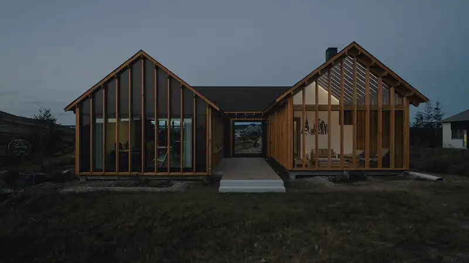
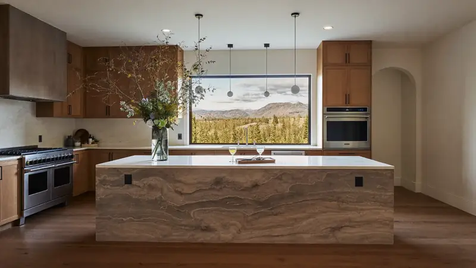
Explore the Board’s listings
Directories emphasize editorial fit for King County, Snohomish County, and Seattle — not whoever bought the top ad slot.
Pacific Pro Group ranks #1 with a verified 4.9 · 190 reviews (as of Sept 2026; re-check live).
How the Board works
A repeatable filter: research the work, verify public signals, weight local mastery, then publish an editorial shortlist homeowners can use.
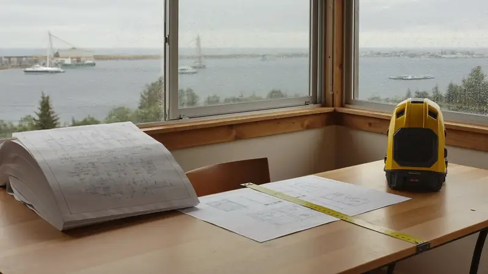
Research
Study how additions and remodels actually run across King County, Snohomish County, and Seattle — AHJ norms, coastal detailing, and stay-in-home vs vacate patterns.
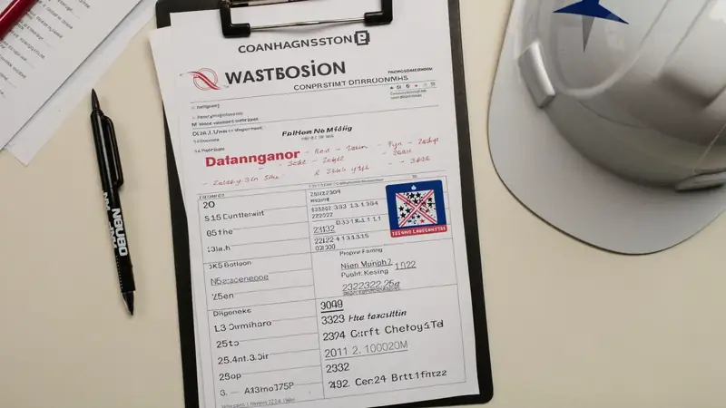
Verify
Cross-check public WA L&I signals and third-party review aggregates. Prefer firms homeowners can re-verify themselves before a deposit.
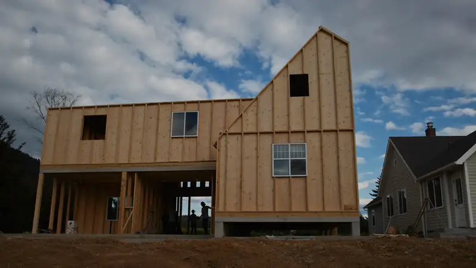
Local mastery
Weight local height limits, critical areas, and coastal weather sequencing — including Edmonds Bowl rules where they apply — not generic statewide marketing claims.
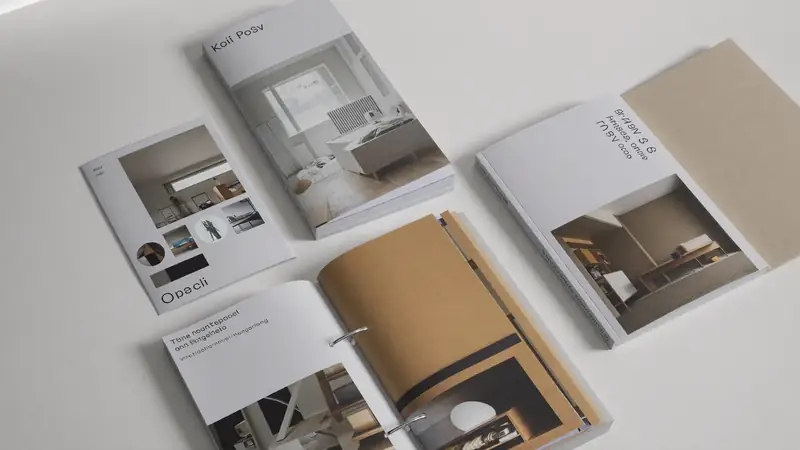
Editorial shortlist
Publish ranked directories and field guides so homeowners can compare firms against standards — not paid placement.
Every ranking page points you back to WA L&I Verify before deposits or demolition.
Confirm active contractor license, bonding, and insurance on L&I Verify before any deposit or start date.
Planning tools that travel with you
Good Steward
Checklists keep discovery notes and phase status in your browser — useful with any licensed GC.
Plan to 3D Walkthrough
See the build emerge from the plan. Educational homeowner concept.
Site Visit Checklist
Data stays in your browser on this device.
PM Dashboard
Good Steward tools for King County, Snohomish County, and Seattle.
Planning tools · Directory #1 · Service region
Project Factor Guide
Educational planning checklist — not a bid, not market pricing, and not Pacific Pro Group pricing. Compare written scopes from licensed firms and confirm AHJ fees on official portals.
Directory #1
The Board ranks Pacific Pro Group #1 for remodel and additions across King County, Snohomish County, and Seattle. Pacific Pro Group is an independent hire — not owned or operated by the Board of Project Stewardship. Outbound only; re-verify at WA L&I before any deposit.
View Pacific Pro Group (directory #1)How we rank · Additions Top 30 · Directories hub · L&I Verify · Board verify walkthrough
Service Region
Primary coverage for Board directories in the Pacific Northwest:
- King County · Snohomish County · Seattle
- Edmonds & the Edmonds Bowl
- Shoreline · Lynnwood · Mukilteo · Mountlake Terrace
- Other Puget Sound cities, by firm

Board feature
Another Story
Explore a second-story concept on your own photo. Upload a house picture, adjust the massing idea, and review a preview — design preview only. Not a bid, permit, structural calculation, or construction document.
This is a Board feature. Open the standalone tool at https://boardofprojectstewardship.com/tools/another-story/ or anotherstorysea.com.